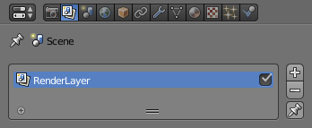
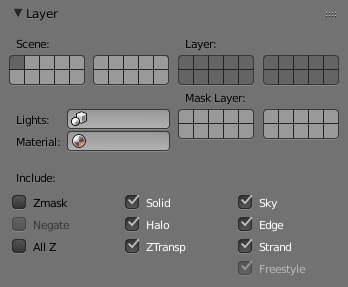

渲染层¶
可以在不同的层上进行场景渲染，通常在完成渲染完成之后再将它们合成在一起。
这将带来几个很常用的用途，譬如小范围的颜色修改、通过创建DoF的快速手法来模糊前景、又或者是减少非重点对象的渲染画质。
每次整个画面改动造成的重新渲染耗时可以节省下来了，通过渲染层，就可以只替换您需要的那个部分的图层即可。
图层列表¶
参考
面板：

图层列表。
这里显示了当前场景的所有图层。
只有激活的图层（右边选项框打勾）会被渲染。如果列表右下方那个“大头针”标志的按钮启用的话，那么仅有活动图层（高光显示）会被渲染。
可以通过右侧的“+”和“-"号可以增加或者减少图层，现有的图层可以通过双击名称来变更。
层¶
参考
面板:

图层面板。
显示活动渲染图层的设置，如上图列表所示
点“Shift+LMB”键可选择多个图层
- 场景
- 用于显示当前可视且待渲染的场景层
- 层
- 场景层和活动渲染层是相关的。场景层对象在渲染层中也将呈现：场景层中的对象会投影和反射在渲染层上，因此它在渲染层中是间接可见的。
- 遮罩层
- 处于遮罩层的对象将会掩盖在它下面的其他对象。可以用于将虚拟物体前面的物体遮挡摄像机视线的效果合成为连续镜头。
- 材质覆盖
重新选择材料，并覆盖先前的所有材料设置。
可能会用到的例子：
- To check lighting by using a plain diffuse material on all objects.
- Render a wireframe of the scene.
- 创建一个自定义渲染如抗锯齿的蒙版或全局坐标。